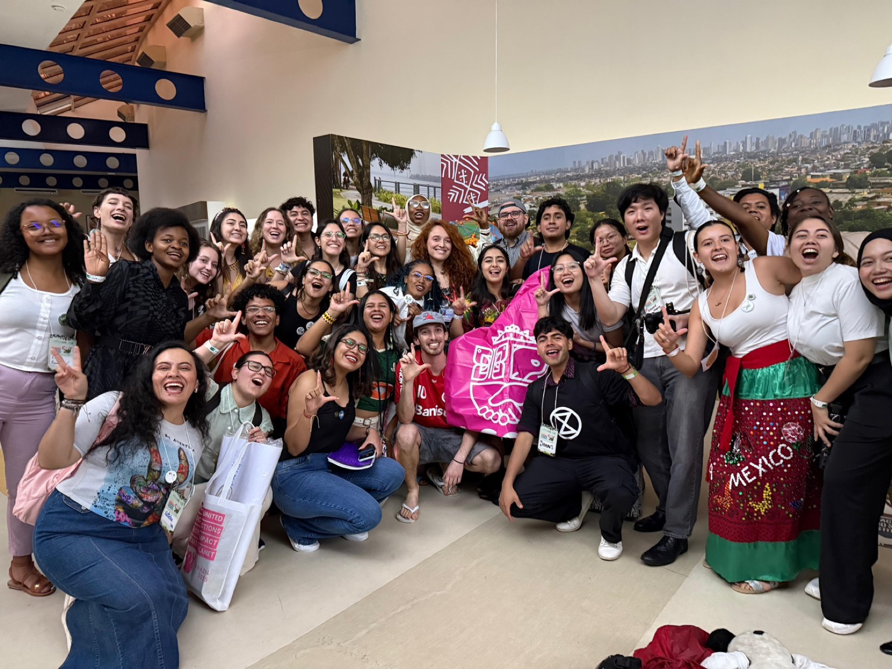
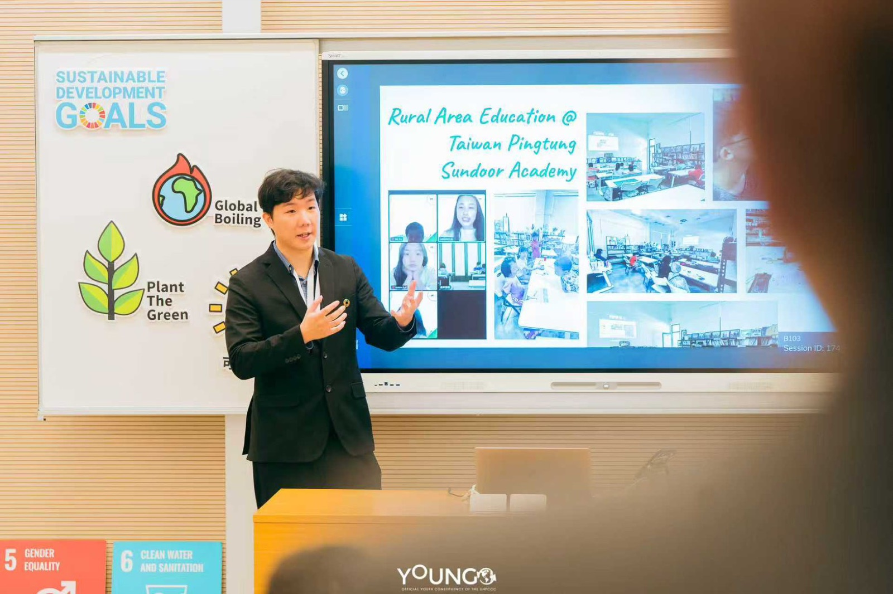
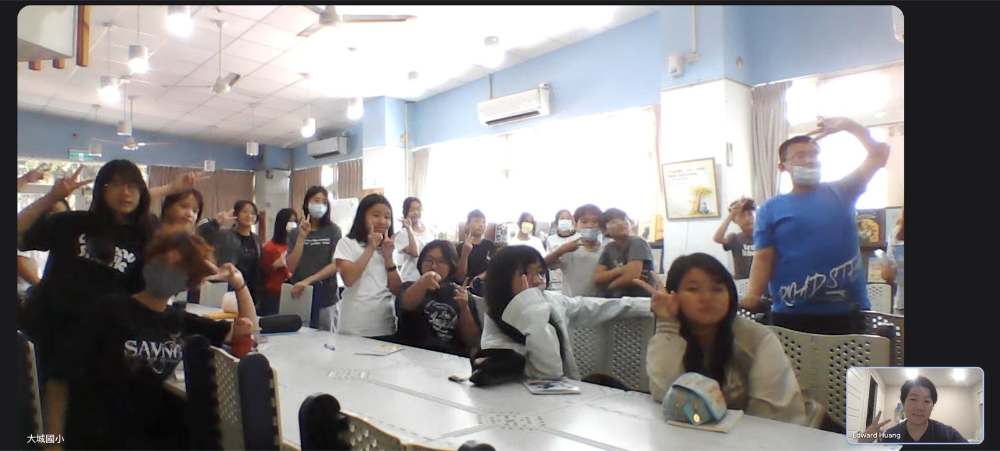

COP · COY · GCOY · LCOY
真實的聯合國青年氣候舞台
透過 Edward 與 LCOY Taiwan 的串連，台灣大學生可從在地論壇出發，逐步走向 COY、GCOY 乃至 COP 的全球舞台——這是普通管道難以取得的國際參與機會。
UNFCCC YOUNGO 成員、LCOY Taiwan 國際大使、UCLA 碩士。
透過人師教育協會 My Culture Connect，為台灣大學生開啟聯合國氣候峰會、SDGs 教學、跨國 PBL的真實國際舞台。

長期投入青年氣候行動、SDGs 教育與跨國項目制學習，將個人興趣連結到聯合國永續發展目標，提升台灣在全球氣候行動中的能見度與影響力。
Edward Huang is based in Irvine, CA, holding a Master's degree from UCLA. He is a member of YOUNGO, the official Children and Youth Constituency of the UNFCCC, and has been actively engaged in youth climate action and advocacy since 2023, participating in the Global Conference of Youth (GCOY) and related initiatives.
As an International Ambassador for LCOY Taiwan, and as a youth coach, he guides students in connecting their personal interests with the UN Sustainable Development Goals (SDGs), amplifying the voices of youth and children to raise Taiwan's visibility and impact in global climate action.
Edward Huang（黃雋翔），現居美國加州爾灣，UCLA 碩士畢業。現為聯合國氣候變化綱要公約（UNFCCC）旗下青年組織 YOUNGO 成員，長期投入青年氣候行動與倡議工作。
作為 LCOY Taiwan 國際大使與青年教練，引導學生將個人興趣與聯合國永續發展目標 SDGs 結合，透過青年與兒童的聲音，提升台灣在全球氣候行動中的能見度與影響力。

不是一場演講就結束。這是一個讓學生從在地實作走向國際舞台、把履歷與全球公民素養同時打開的合作機會。
Direct path to UN climate summits
透過 LCOY Taiwan、COY、GCOY、COP 的階梯式參與，讓學生帶著自己的氣候/永續行動，**從校園走到聯合國**。Edward 是 LCOY Taiwan 唯一主辦團隊的核心成員。
Project-Based Learning with UN SDGs
不是聽課，是動手做。Edward 引導學生把個人興趣（環境、社會、文化、設計）與聯合國 17 項永續目標連結，產出**可上國際舞台的專案成果**。
Cross-cultural youth networks
透過 EECI 帶來的美國 ABC 青年志工，台灣大學生有同代、同語言、跨文化的真實交流——比一般國際生社團更深入，**直接打通台美教育人脈**。
Press coverage & CV boost
Edward 累積 **7+ 篇主流媒體報導**（大紀元、僑務電子報、ESG 永續台灣等）。學生與 Edward 合作的成果，自然有機會出現在新聞稿——對升學、求職、申請獎學金加分極大。
Academic publication & invention exhibits
Edward 帶過青年參加學術論文發表與發明展。對工管、社科、教育、設計領域的學生，是難得的**跨領域成果產出訓練**。
Taiwanese-American advocacy bridge
Edward 不是「外國人來台灣」，是**台裔美國人為台灣發聲**。對大學生而言，這個身份讓國際化更有共鳴，也提供將來赴美升學的人脈接點。

與來自世界各國的青年代表齊聚，共同產出 NYS（國家青年宣言）提交聯合國

Rural Area Education @ Sundoor Academy

每週一中午 SDGs 主題英語課
聯合國青年氣候峰會、台美青年文化交流、彰化雙語教育——Edward 的工作受到國內外媒體持續關注。
以下單位最能將 Edward 的國際資源轉化為實際的學生培育成果。
建立海外姊妹會、台美青年交流、學生赴美實習與升學的人脈起點。
結合 UN SDGs 框架推動學生專案，產出可上 UN 平台的成果。
將學生 USR 專案延伸至聯合國 LCOY、COY、GCOY 國際舞台。
為學生領袖開啟跨國青年領導力訓練、媒體曝光、履歷加值。
跨領域 PBL 機會，特別適合畢業專題、論文發表、發明展指導。
對外國際合作、媒體曝光、補助申請的策略性對話。
若貴校有意洽談學生國際氣候參與、SDGs 主題課程、跨國 PBL 合作，請透過人師教育協會 林吉祥理事長安排線下會議。